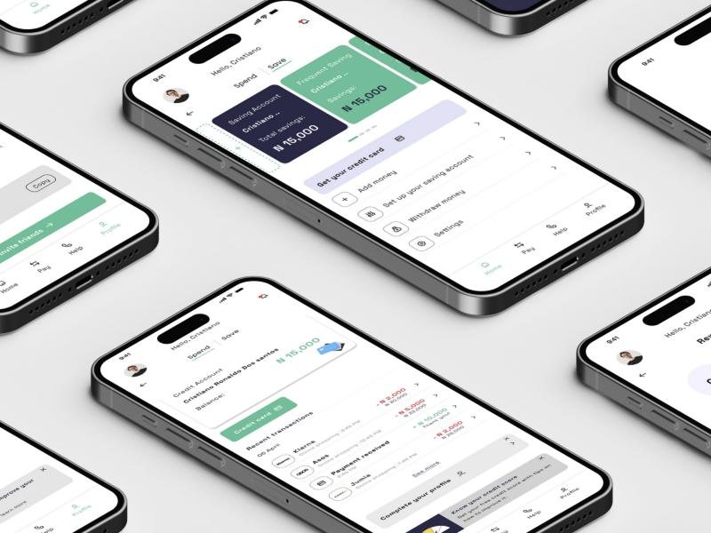

Spendit.
NYSC corps members live on a monthly allowance that rarely lasts the month, and loan apps don't serve them well. Spendit gives them a credit card, a credit score and simple savings in one app.

The allowance runs out before the month does.
Corps members and people on fixed incomes run into the same wall:
- The money isn't enough to cover essential spending until the next payment
- Loans are hard to get. Applications often fail and lenders ask for too much
- Credit is expensive. Loan apps charge high interest for small amounts
- Saving feels impossible on a small, fixed income
Corps members want a safety net, not a payday loan.
I interviewed stakeholders to understand the brand and its goals, then surveyed corps members on their allowance, savings and borrowing.
- Corps members struggle to cover expenses for the whole service year
- Saving is hard because there's nothing left over
- When money runs out, they borrow from family and friends or turn to loan apps
- Getting a loan from a lender is slow and often fails
Three corps members, three money problems.
Corps members first, then people on fixed incomes such as government workers.
Issac John
27 · NAFDAC, LagosWorks six days a week and spends a lot on transport. Unwinds with movies and shopping online.
- Wants to save monthly and get extra cash for purchases
- Struggles with high loan-app interest and few options for corps members
Deborah Adams
22 · Dangote, EdoMoved from Lagos for her service and flies to other states for work every two months.
- Wants to pay bills, save for rent and book flights easily
- Struggles with travel costs her employer doesn't cover
Sanni Akin
24 · Kng Stores, LagosRuns a side hustle selling computers and accessories at Computer Village.
- Wants to stock his business and buy on credit
- Struggles with slow loan approvals and no funds to grow
How running short feels.
Says
- “The allowance helps, but it isn't enough.”
- “They should increase it.”
- “I need more money to pay for things.”
Thinks
- Corps members should get access to more money
- The government should offer a lending scheme
- A fair allowance would be ₦50,000 to ₦60,000
Feels
- Exhausted and worried
- Lost and disappointed
- Under pressure to save
Does
- Asks parents or friends for money
- Hustles around and takes loans from apps
- Waits it out until the next allowance
What corps members asked for.
As a corps member, I want access to credit so I can make purchases online and pay back later.
As a corps member, I want a savings feature so I can save from my allowance every month.
As a corps member, I want payment reminders so I know when my next payment is due.
As a corps member, I want to pay back in instalments so part of my allowance still covers other expenses.
Where the loan apps fall short.
I compared four popular lenders. None offer a credit card or check credit scores, which became Spendit's gap.
| Carbon | RenMoney | FairMoney | Branch | Spendit | |
|---|---|---|---|---|---|
| Approval time | 5 minutes | 24 hours | 5 minutes | 24 hours | 15 minutes |
| Monthly interest | 5–15% | 3–9% | 10–30% | 14–28% | 5–12% |
| Credit limit | Up to ₦1m | Up to ₦6m | Up to ₦500k | Up to ₦200k | Up to ₦100k |
| Card | Debit | Debit | Debit | Debit | Credit |
| Credit score check | No | No | No | No | Yes |
| Repayment | 3–12 months | 3–24 months | 1–3 months | 4–64 weeks | 30 days |
| Savings | Yes | Yes | Yes | Yes | Yes |
Twelve weeks, design thinking.
Empathise
- Stakeholder interviews
- User survey
- Empathy map
Define
- Personas
- Problem statement
- Goals and user stories
Ideate
- Competitor analysis
- Information architecture
- User flows
Design & test
- Mid-fidelity wireframes
- Visual design
- Hi-fi prototype and usability checks
What the research turned into.
Spend and Save, side by side
A simple toggle at the top of home splits the app into Spend (the credit card) and Save (savings accounts). Both of the biggest needs from the survey are one tap apart.
A credit card, not another loan
Every competitor offers debit cards and lump-sum loans. Spendit puts a credit card front and centre, with quick actions to manage it, so people borrow only what they spend.
Credit score as motivation
A visible credit score and "know your credit score" nudges show users how to unlock higher limits. No competitor checked scores, so this became the core differentiator.
Savings that fit a small allowance
Users can open several savings pots, such as a main account and a frequent saver, and add or withdraw money from the same screen.
Lower rates, short repayment
Monthly interest of 5–12% and a 30-day cycle line repayment up with the allowance. The trade-off is a lower ₦100k limit to keep risk manageable.
The screens.

Calm green for money you can trust.
Set in Space Grotesk, with mint green for actions and growth and deep navy for credit and savings cards.
What happened next.
Usability test findings, changes you made after testing, and any results such as sign-ups, cards issued or savings created. Also add how many people took the survey.